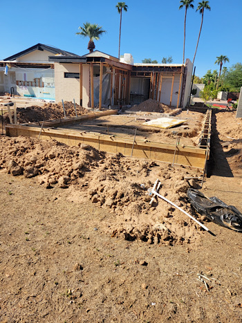
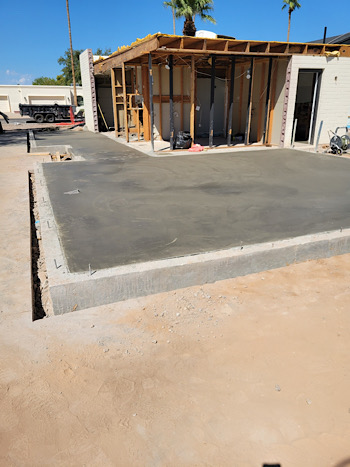

Foundation

Before

After
Before and after photos of a foundation we built
| Methods | Materials | Labor | Other | Total |
|---|---|---|---|---|
| 2025-2026 | ||||
| Do it Yourself | $5/sqr ft | $0 | $100/day | $5/sqr ft + $100/day |
| Others Prices | $5/sqr ft | $3/sqr ft | $50/sqr ft + $60 or more for concrete delivery fee | $58/sqr ft + additional fees |
| Our Prices | $7.5/sqr ft | $8.3/sqr ft | $9.2/sqr ft | $25/sqr ft |
Also, the diy section of this table does not inclide the purchase of forms, stakes and other equipment required to build your own foundation.
This video shows displays some materials that are used such as footers and rebars to ensure that the foundation is strong and durable.